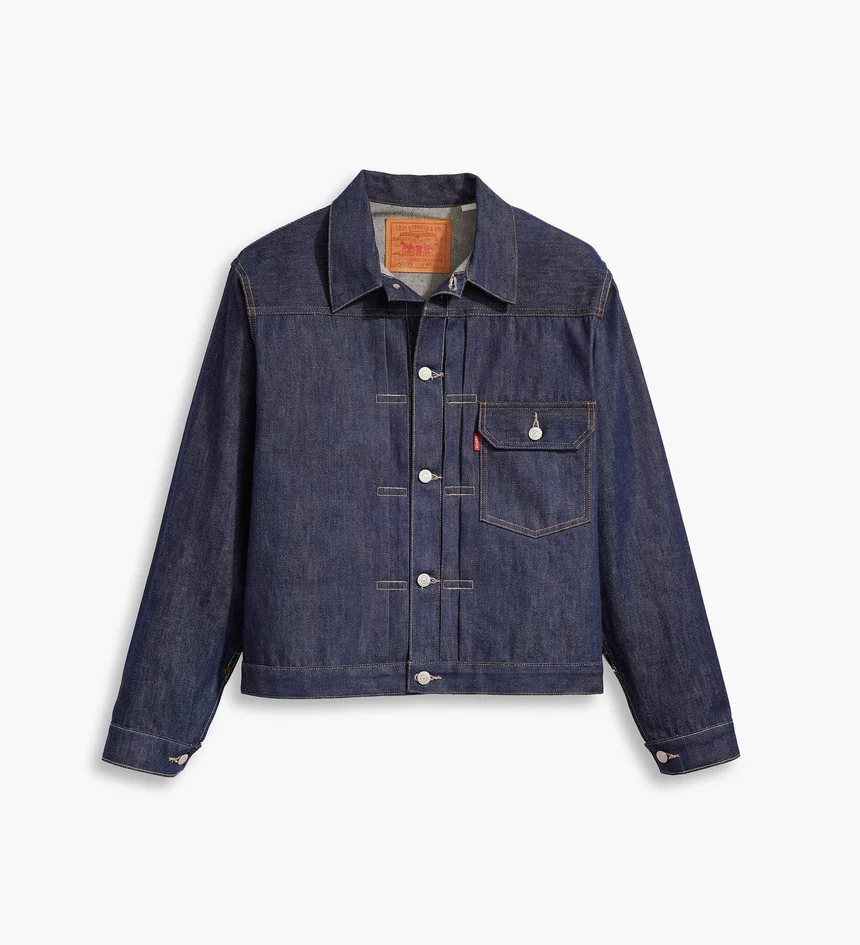
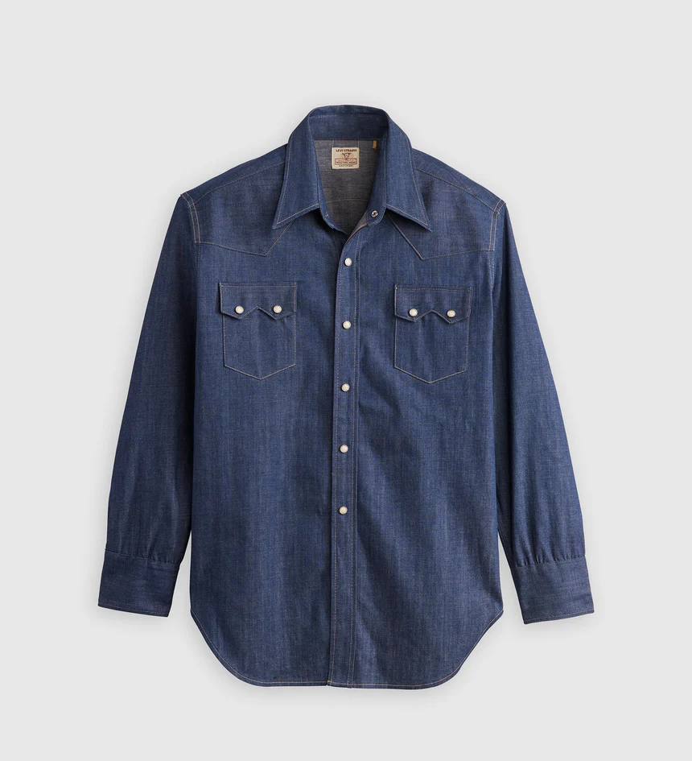
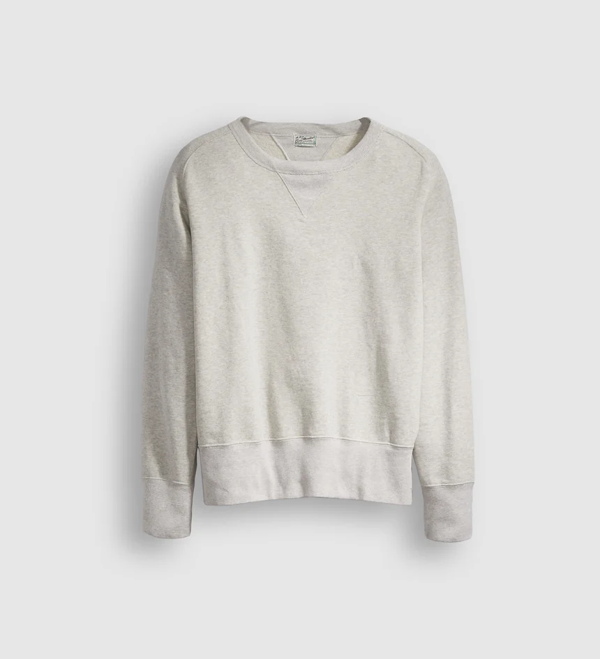
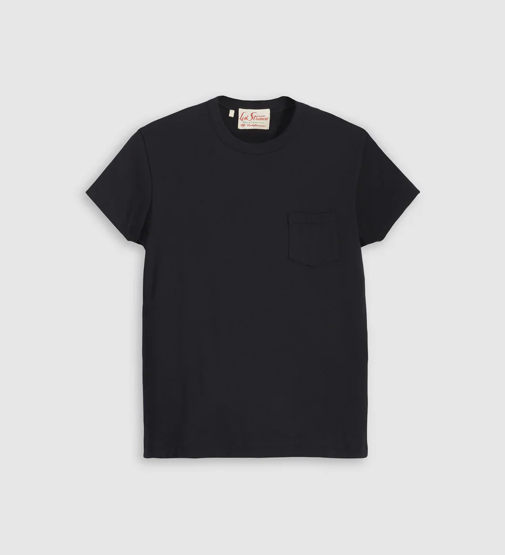

Iconic Top
LVC 1936 타입 I 자켓

LEVI'S 1936 타입 I 자켓 만큼 미국의 노동력을 상징하는 옷은 없습니다.
견고한 셀비지 데님의 레귤러 트러커는 오랫동안 미국 노동자들이 입는 비공식 유니폼으로 여겨져 왔습니다.
앞부분의 플리츠 2개, 가슴 포켓 1개, 허리 사이즈를 조절할 수 있는 구리 신치백,
로트 넘버 506이 새겨진 Two Horse 가죽 백패치, 품질을 약속하는 XX 를 조합한 라벨이 특징입니다.
1936년은 대문자 빅E 레드 탭이 Levi&co. 제품에 부착된 첫 해이기도 합니다.
LVC 1955 쇼트혼 소우투스 셔츠

Levi's의 LVC 1955 쇼트혼 소우투스 셔츠는 Levi’s® Vintage Clothing 라인의 상징적인 제품입니다.
과거 시대의 핏, 원단, 디테일을 재현하며, 아카이브를 통해 150년간의 역사를 재조명합니다.
레귤러 핏, 자개 스냅 버튼, 웨스턴 요크 디테일, 아이코닉한 쇼트혼 라벨이 특징입니다.
100% 유기농 면으로 제작된 프리미엄 일본 원단을 사용했으며,
시간이 지나며 자연스러운 색감 변화와 빈티지한 질감을 느낄 수 있습니다.
LVC 베이 메도우 스웻셔츠

베이 메도우 크루 스웻셔츠는 1930년대 오리지널 제품을 복각한 모델입니다.
부드러운 mele 플리스 소재로 제작되어 착용감이 뛰어나며, V넥 립브 카라와 립브 소매, 오리지널 베이 메도우 라벨이 특징입니다.
클래식한 디자인 속에서 편안함과 레트로 감성을 동시에 느낄 수 있습니다.
LVC 1950S 스포츠웨어 티셔츠

1950s 스포츠웨어 티셔츠는 Levi’s® Vintage Clothing 컬렉션의 대표 제품 중 하나입니다.
여유로운 핏과 반소매 디자인으로, 부드러운 저지 소재가 특징입니다.
네모난 가슴 포켓과 Levi’s® 스포츠웨어 라벨이 포인트이며,
캐주얼하면서도 클래식한 분위기를 연출할 수 있습니다.